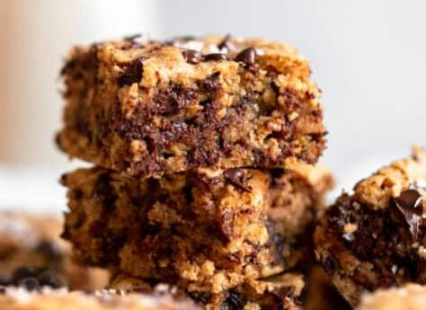
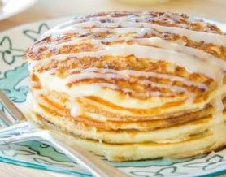
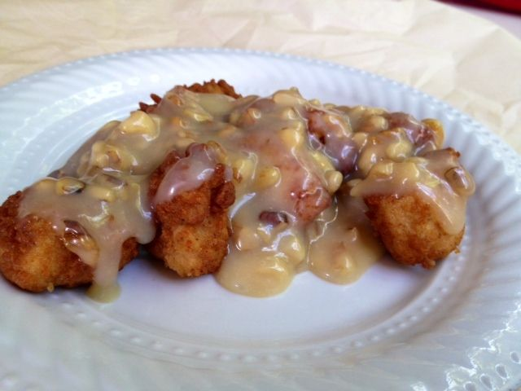
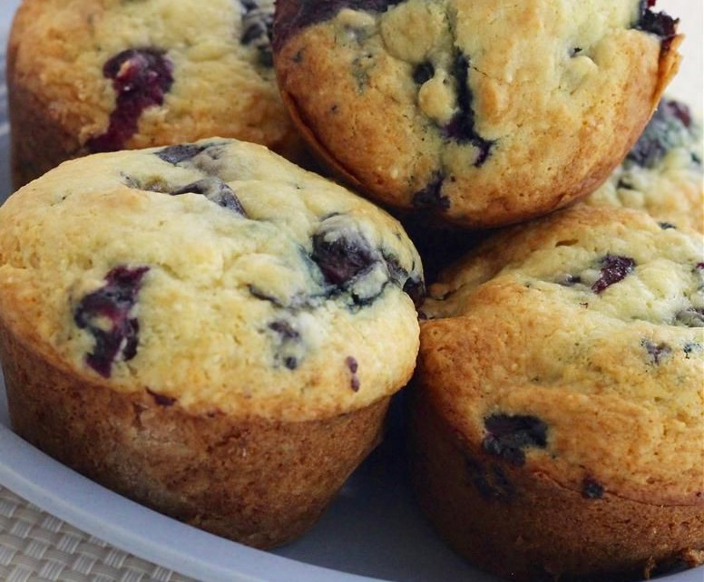
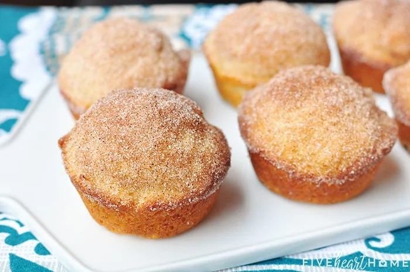
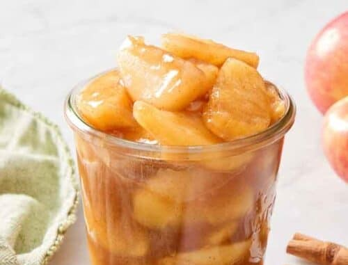
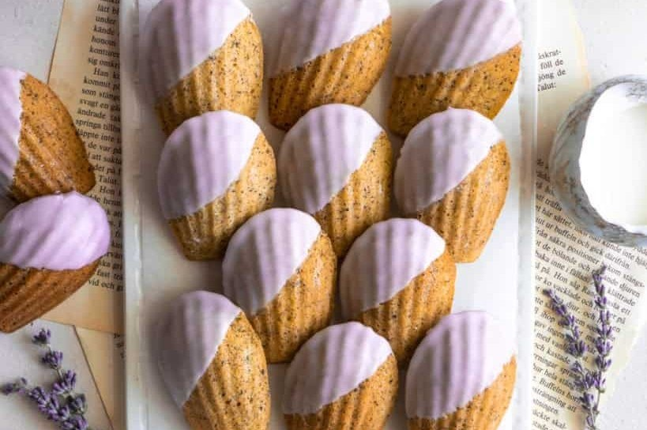
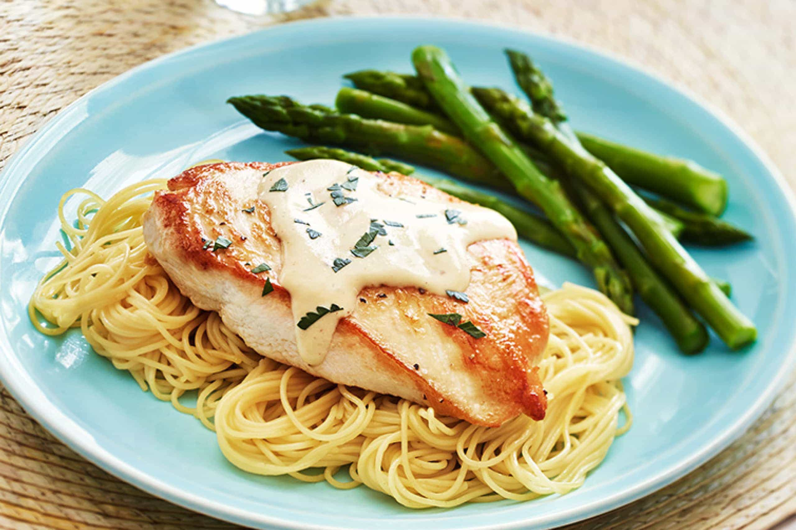

Oatmeal Chocolate Chip Cookie Bars
Oatmeal Chocolate Chip Cookie Bars
Ingredients
Wet:
▢1 cup granulated sugar of choice can use brown, white, coconut or a mix
▢¼ cup runny almond butter
▢6 tablespoons unsalted butter see not
▢2 teaspoons vanilla extract
Dry:
▢1 ½ cups quick oats
▢1 cups oat flour
▢¾ teaspoon baking powder
▢¼ teaspoon salt
▢½ teaspoon cinnamon
▢1 cup chocolate chips plus more for topping
Recipe Intructions
Preheat the oven to 350 degrees Fahrenheit.
Add the butter to the microwave and melt for about 30 seconds.
In a large mixing bowl, combine the melted butter and all remaining wet ingredients. Whisk together until combined.
Add in the dry ingredients and mix together until a batter forms. Fold in the chocolate chips and mix.
Transfer to an 8x8 pan lined with parchment paper. Spread evenly throughout the pan and sprinkle on additional chocolate chips if desired.
Bake for 25-35 minutes depending on your oven and how gooey you like the center. The top should look set/golden brown and nothing should jiggle if you move the pan. All ovens are different, so keep an eye on them! They will continue to cook a bit after taking out of the oven, so take them out early if you prefer a bit more gooey.
Let cool completely (annoying but important!) before slicing. Serve as is or with a scoop of vanilla ice cream!
Notes
You can safely use a 9x9 dish if that's all you have, just know the bars will be thinner and you will need to adjust the baking time slightly. Check the bars around 18 minutes.
I highly recommend using quick oats for this recipe. Rolled (old fashioned) oats will work, but they give the bars a grainier texture that I personally am not a huge fan of. You can also do half and half if you like a bit more texture.
I like using butter in this recipe, but you can swap for coconut oil or dairy free butter. If you're using coconut oil, just make sure it is refined so you don't have any coconut flavor.
I have not tested this recipe with an egg replacer, but I do think it would work. Brownies, blondies and bars of all kind are generally pretty forgiving, so I would suggest either using apple sauce (3 tablespoons for each egg) OR use flax eggs. To make the flax eggs combine 1 tbsp of ground flax or flax meal with 2 1/2 tablespoons of water. Set aside to thicken, that mixture will equal one egg.
Serving: 1bar / Calories: 267kcal / Carbohydrates: 36g / Protein: 5.5g / Fat: 12.3g / Fiber: 3.1g / Sugar: 19.1g
Cinnamon Roll Pancakes
Cinnamon Roll Pancakes
Ingredients
For the pancakes:
5 oz all purpose flour (1 cup, if measuring)
2 tsp baking powder
1/2 tsp salt
1 cup milk
1 tbsp butter melted
1 egg
For the Filling:
3 tbsp butter melted
1/2 cup brown sugar
2 tsp ground cinnamon
For the Glaze:
3 tbsp butter
2 oz cream cheese
3/4 cup powdered sugar
1/2 tsp vanilla extract
Recipe Intructions
Whisk to combine the flour, baking powder and salt. In another bowl, whisk to combine the milk, melted butter, and egg. Pour the wet ingredients into the dry, and stir until the flour has disappeared, but there are still plenty of lumps.
Make the filling by stirring to combine the melted butter, brown sugar, and cinnamon.
Prepare the glaze by melting the butter and cream cheese together in the microwave. Stir in the powdered sugar and vanilla extract and stir to combine.
Heat up a griddle over medium heat, and if desired, grease the pan with a little bit of butter. Use a 1/4 cup measuring scoop to portion out the pancakes. Immediately spoon over a tablespoon or so of the cinnamon swirl, in an outward circular motion from the center.
Cook for another minute, then flip. Cook for one or two more minutes.
Top the pancakes with the glaze, and enjoy!
Nutrition
Calories: 391kcal, Carbohydrates: 46g, Protein: 5g, Fat: 21g, Saturated Fat: 12g, Cholesterol: 77mg, Sodium: 295mg, Fiber: 1g, Sugar: 29g
Sourdough

Sourdough
Ingredients
125g starter
325g water
500g flour
10g salt
Recipe Intructions
Add water & starter then mix
Add Flour & salt then mix
Sit covered for one hour
4 sets stretch & folds, 30 mins apart*
Sit covered on counter for 3-8hrs
Shape dough, put in floured banneton*
IF BAKING SAME DAY:
Let dough sit for 1 hr preheat Do to 475°
Score dough, bake in Do (on bread sling or pp)
30 mins lid on
Reduce to 425°, bake 20 mins lid off
Time may vary, bread should be 205°-210°★
Let cool completely
IF BAKING NEXT DAY:
Place floured banneton in fridge covered for up to 3 days >>> longer in fridge • more sour
When ready to bake take out of fridge and follow above instructions
*Add any inclusions at either of these steps!
★Inclusions can increase bake time, temp bread to check for done-ness!
Honey Walnut Chicken
Honey Walnut Chicken
Prep Time: 15 m | Cook Time: 15 m | Total Time: 30 m
Ingredients
1 cup water
1 cup mayonnaise
2/3 cup white sügar
1/2 cup walnuts pecans
1 pound Chicken
8 tablespoons honey
4 egg whites
4 tablespoons coconut milk
2/3 cup mochiko (glutinous rice flour) (or Gluten-Free Flour)
1 cup vegetable oil for frying (or Olive Oil)
Recipe Intructions
Stir together the water and sugar in a small saucepan. Bring to a boil and add the walnuts. Boil for 2 minutes, then drain and place walnuts on a cookie sheet to dry.
Whip egg whites in a medium bowl until foamy. Stir in the mochiko until it has a pasty consistency. Heat the oil in a heavy deep skillet over medium-high heat. Dip chicken into the mochiko batter, and then fry in the hot oil until golden brown, about 5 minutes. Remove with a slotted spoon and drain on paper towels.
In a medium serving bowl, stir together the mayonnaise, honey and coconut milk. Add chicken and toss to coat with the sauce. Sprinkle the candied walnuts on top and serve.
6-1-16: Made candied pecans out of a small amount of water, 2 tbsp coconut oil, & 1½ tbsp agave syrup. Cook until browned, strain and keep syrup for sauce.
Used 2 chicken breasts, half to quadruple the sauce amount. Used coconut milk in place of condensed milk.
Cheddar Bay Biscuits
Cheddar Bay Biscuits
Prep Time: 8 mins | Cook Time: 12 mins | Total Time: 20 mins
Ingredients
4 cups all-purpose flour
2 tablespoon baking powder
1 tablespoon granulated sugar
2 tablespoon garlic powder - Add lots of spice!
3 teaspoon kosher salt, divided
1 ½ cup unsalted butter, 11/2 sticks, divided *use full ½ stick of butter for sauce
2 cup whole milk
16 ounces shredded mild cheddar cheese
1 teaspoon dried parsley
Recipe Intructions
1. Preheat oven to 450°F. Line a baking sheet with parchment paper.
2. Add 1 stick (1/2 cup) of butter in a small microwave-safe mixing bowl. Microwave for 30 seconds or until butter is melted. Set aside.
5 Ingredient Empanada Dough
5 Ingredient Empanada Dough
Prep Time: 15 MINUTES | Cook Time: 30 MINUTES | Total Time: 45 MINUTES
yield: 16 SERVINGS
* Bake at 400 degrees for 20-30 minutes
Ingredients
4 cups all purpose flour
1 tsp salt
½ cup butter (unsalted), melted
4 egg yolks
1 cup water
Recipe Intructions
Mix dry ingredients. Mix the flour with the salt in a large bowl to combine.
Add wet ingredients. Add the melted butter, egg yolks, and water to the flour mixture.
Work the dough. Mix together until a dough begins to form. Transfer to a flour dusted surface and continue to knead until a consistent ball of dough forms. If the dough feels too wet, add flour one tablespoon at a time until it no longer sticks to your hands.
Chill. Cover the dough with a towel and let chill in the fridge for at least 30 minutes.
Roll. Divide the dough into quarters, then into eighths, then sixteenths, then into 32 pieces. Roll each piece into a ball. On a flour dusted surface roll each ball into a round circle using a rolling pin.
Fill & fry or bake. From here, you're ready to fill your empanada dough with whatever you like. Make sure to not overfill your empanada dough and crimp the dough shut using a fork. You can pan fry, deep fry, or bake them.
Blueberry Cream Muffins
Blueberry Cream Muffins
Yields about 16 muffins
Ingredients
• 2 eggs
• 1 cup white sugar
• 1/2 cup vegetable oil
• 1/2 teaspoon vanilla extract
• 2 cups all-purpose flour
• 1/2 teaspoon salt
• 1/2 teaspoon baking soda
• I cup sour cream
• 1 cup blueberries
Recipe Intructions
This recipe's ingredients were scaled to yield a new amount. The directions below still refer to the original recipe yield of 2 dozen.
1. Preheat oven to 400 degrees F (200 degrees C). Grease 24 muffin cups or line with paper muffin liners.
2. In large bowl beat eggs, gradually add sugar while beating. Continue beating while slowly pouring in oil. Stir in vanilla. In a separate bowl, stir together flour, salt and baking soda.
3. Stir dry ingredients into egg mixture alternately with sour cream. Gently fold in blueberries. Scoop batter into prepared muffin cups.
4. Bake in preheated oven for 20 minutes.
French Breakfast Puffs
French Breakfast Puffs
Prep Time: 25 mins | Cook Time: 20 mins | Total Time: 45 mins
Servings: 18 to 20 muffins
Calories: 233kcal
Ingredients
• 3 cups flour
• 1 tablespoon baking powder
• 1 teaspoon salt
• ¼ teaspoon nutmeg optional
• ⅔ cup butter at room temperature
• 1 cup sugar
• 2 eggs at room temperature
• 1 cup milk at room temperature
• 1 teaspoon pure vanilla extract
FOR THE TOPPING:
• ⅓ cup melted butter
• ¾ cup sugar
• 1 ½ teaspoons cinnamon
Recipe Intructions
1. Preheat oven to 350°F. Generously grease muffin cups with butter.
2. In a medium bowl, whisk together flour, baking powder, salt, and nutmeg. In a large bowl, use an electric mixer to beat together softened butter and sugar until light and fluffy. Blend in eggs until well incorporated. Slowly mix in flour mixture, alternating with ###BLANK### until all ingredients are blended. Stir in vanilla.
3. Divide batter between muffin cups so that they are ###Huge Blank### to turn golden and a toothpick inserted in center ###Huge Blank###.
Vanilla Bean Eclairs

Vanilla Bean Eclairs
Makes 15 éclairs
Prep Time: 20 MINUTES | COOK TIME: 35 MINUTES
Chilling Time: 2 HOURS | RESTING TIME: 20 MINUTES
Ingredients
For the éclairs
Choux Dough (page 122), 1 batch
For the vanilla bean cream filling
2 cups whole milk
1 whole vanilla bean
½ cup (100g) sugar, divided
¼ cup cornstarch
⅛ teaspoon salt
5 large egg yolks
4 tablespoons unsalted butter, cut into pats
1 teaspoon vanilla extract
For the egg wash
1 large egg
1 teaspoon water
Recipe Intructions
1. MAKE THE VANILLA BEAN PASTRY CREAM.
In a medium saucepan, heat the milk, vanilla bean, and ¼ cup sugar over medium heat until the liquid is steaming but not boiling. In a medium bowl, whisk together the remaining ¼ cup sugar, cornstarch, salt, and egg yolks. Once the milk is warm, remove the vanilla bean and set aside. Ladle a little milk into the egg yolk mixture and stir vigorously to combine. Ladle a little more milk and repeat until all of the milk is in the egg yolk mixture. Pour the mixture back into the saucepan, place over medium heat, and whisk frequently. Once it reaches a boil, turn off the heat and whisk quickly to help the mixture thicken. Add the butter and whisk until melted. Split the vanilla bean in half, scrape out seeds from one half, and add them to the cream. Save the other half for later. Whisk in the vanilla extract. Push the mixture through a mesh sieve to remove lumps. Cover with plastic wrap so that the plastic touches the pastry cream to prevent a film from forming on top. Refrigerate until chilled, about 2 hours.
Chicken Cordon Bleu Sauce
Chicken Cordon Bleu Sauce
Course: Main Course, Dinner | Cuisine: French
Prep Time: 30 mins | Cook Time: 45 mins | Total Time: 1 hr 15 mins
Servings: 6 | Calories: 246kcal
Equipment
• Skillet
Ingredients
• 6 tablespoons butter
• 1/2 cup chicken broth
• 1 teaspoon chicken bouillon granules
• 1 tablespoon cornstarch
• 1 cup heavy whipping cream
• 1/2 teaspoon pepper
• 1 tablespoon basil
Recipe Intructions
1. Whisk cornstarch and heavy whipping cream together in a small bowl. Set aside.
2 Bring butter, broth and bouillon to a simmer in a medium-sized pot and reduce for 10-15 minutes.
3. Stir in the cornstarch and whipping cream mixture and continue to cook until the sauce thickens.
4. When sauce is heated through and thickened, add pepper and basil.
5. Serve over Chicken Cordon Bleu.
Nutrition
Calories: 246kcal | Carbohydrates: 3g | Protein: 1g | Fat: 26g | Saturated Fat: 16g | Cholesterol: 84mg | Sodium: 267mg | Potassium: 63mg | Fiber: 1g | Sugar: 1g | Vitamin A: 933tU | Vitamin C: 2mg | Calcium: 44mg | Iron: 1mg
Apple Pie Filling
Apple Pie Filling
Prep Time: 5 mins | Cook Time: 7 mins | Total Time: 12 mins
SERVINGS: 8 servings
Ingredients
• 4 medium appies
• 1 teaspoon cinnamon
• ⅓ cup sugar
• 1 tablespoon + 1 teaspoon cornstarch
• 3 tablespoons water
• 2 tablespoons water
• 2 tablespoons butter
Recipe Intructions
1. Peel, core, and chop or slice apples*.
2. Melt butter and cinnamon over medium heat. Stir in apples, sugar & water.
3. Cover and cook stirring occasionally for 4-6 minutes or until very slightly softened.
4. In a small dish combine cornstarch and 2 tablespoons water. Add to the pan while stirring and continue to cook until appies are soft (not mushy) and filling is thickened.
5. Let bubble 1 minute. Cool.
Notes
Cut apples into 1/2-inch cubes or 1/4-inch slices.
Different varieties of apples may need less (or more) cooking time. Cook just until tender crisp checking the apples with a fork.
Some apples are juicier than others. If you would like your filling thicker, combine 1 tablespoon cornstarch with 1 tablespoon water. Add a little at a time while the mixture is boiling until you reach desired consistency.
Nutrition
Calories: 109, Carbohydrates: 22g, Fat: 2g, Saturated Fat: 1g, Cholesterol: 7mg, Sodium: 26mg, Potassium: 97mg, Fiber: 2g, Sugar: 17g. Vitamin A: 135lU, Vitamin C: 4.2mg, Calcium: 8mg, Iron: 0.1 mg
White Chocolate and Lavender Madeleines
White Chocolate and Lavender Madeleines
Yields: 12 serving(s) | Cal/Serv: 155
Total Time: 30 mins
Ingredients
2/3 c. all-purpose flour, plus more for dusting
1 tsp. baking powder
1/4 tsp. kosher salt
1/2 c. (1 stick) unsalted butter, plus more for pan
1 tsp. lavender, plus more for decorating
2 large eggs, at room temperature
1/3 c. sugar
2 Tbsp. whole milk
2 oz. white chocolate, chopped
Recipe Intructions
Step 1. In medium bowl, whisk together flour, baking powder and salt. In small saucepan, melt butter, then add lavender and let steep 5 minutes; strain and set aside.
Z
Step 2. In bowl, whisk together eggs and sugar until pale and slightly thickened, 2 to 3 minutes.
Z
Step 3. Gently fold in flour mixture, then fold in melted butter until fully incorporated. Stir in milk (the batter should be smooth and shiny). Press piece of plastic wrap against surface of batter, then refrigerate until chilled, at least 1 hour and up to 2 days.
Z
Step 4. Place rimmed baking sheet in oven and heat oven to 400°F. Brush madeleine pan with melted butter, then dust with flour and tap out excess.
Dressed Chicken Breasts with Angel Hair Pasta
Dressed Chicken Breasts with Angel Hair Pasta
Makes 8 servings
Ingredients
1 cup prepared HIDDEN VALLEY RANCH® Original Ranch® Salad Dressing
⅓ cup Dijon-style mustard
4 whole chicken breasts, halved, skinned, boned and pounded thin
½ cup butter or margarine
⅓ cup dry white wine
10 ounces angel hair pasta, cooked and drained
Chopped parsley
Recipe Intructions
In small bowl, whisk together salad dressing and mustard; set aside. In medium skillet, saute chicken in butter until browned; transfer to dish. Keep warm.
Pour wine into skillet; cook over medium-high heat, scraping up any browned bits from bottom of skillet, about 5 minutes. Whisk in dressing mixture; blend well.
Serve chicken with sauce over pasta; sprinkle with parsley.